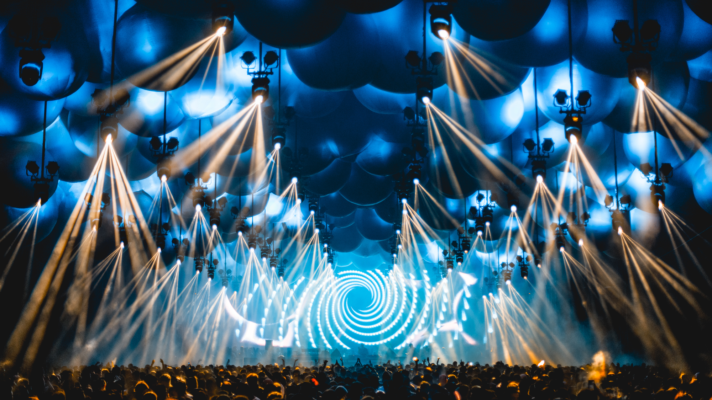

Time-Warp

Maimarkthalle, Mannheim (Germania)
4 aprile*
L’appuntamento fisso tedesco dal 1994 è il Time Warp, il festival ultra ventennale che spinge gli affezionati del mondo techno a Mannheim, 80 km a sud di Francoforte.
Con 6 palchi, effetti sonori e visivi da capogiro, ballare sotto i tendoni del Time Warp è una gioia per tutti e 5 i sensi, che va avanti per 19 ore.
Raggiunta una popolarità e un’importanza mondiale, il Time Warp si è allargato, con la nascita di altre edizioni in diversi paesi del mondo, tra cui Brasile e Stati Uniti.
*Le date sono soggette a cambiamenti, consigliamo di rimanere aggiornati tramite i canali ufficiali
ESPLORA E PREPARATI ALL'AVVENTURA